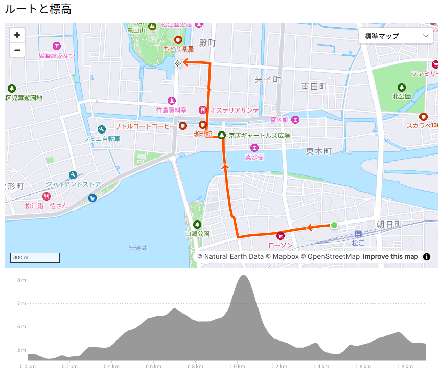
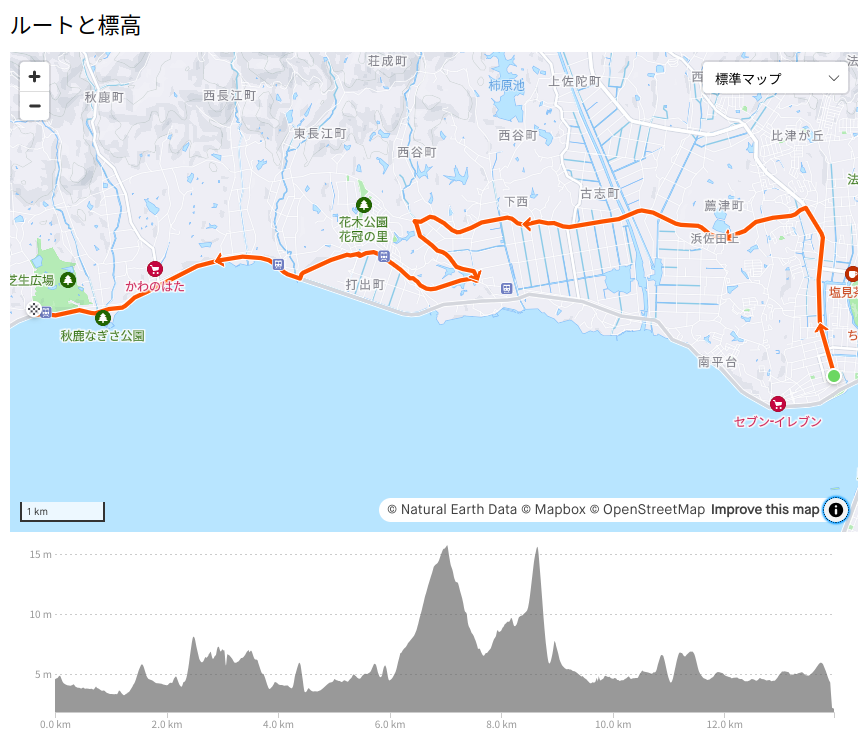

お散歩カメラ 2024-09-07

マンホール1 を巡るお散歩
松江市上下水道局のお知らせを見てたら松江城をあしらったデザインマンホール（の蓋）の設置が完了したらしい。
Strava でも経路を示しておこう。

JR松江駅を起点として松江城大手門前の堀尾吉晴公銅像までの経路に合計10個のデザインマンホールが設置されているらしい。 JR松江駅となりの松江テルサ前と天神町交差点にあるデザインマンホールは気付いていたが，他に8個もあるのか。
というわけで，実際に歩いて確認してみることにした。 ただ，自転車をJR松江駅付近に停めたくないので（駐輪場が有料），いったん県立図書館の駐輪場まで行って，そこからルートを逆向きに辿っていくことにしよう。
まずはいつもの定点観測。
今日は快晴ではあるのだが大気の透明度が低く，松江城からの大山は見れなかった。 残念。
では，出発しようか。
逆光ですまん。 この写真の左下に見えるのが件のデザインマンホールである。
このマンホールの右下部分に見えるQRコードを読み込むと「その周辺の観光情報がわかります」とのことだが，実際にQRコードを読み込んでも数字列しか読み取れない。 なんかアプリと組み合わせるのか？ どっかにちゃんと書いとけよ！
まぁ，いいや。 どんどん行こう。
ここはいつも自転車で通ってる道なんだけど，気付かんもんやねぇ。
しまった。 逆さのままアップしちゃった。 まぁいいか。 直すまぁ。
京店の辺りは殆ど利用しなくなった。 子供の頃はプラモデル屋とかあってよく通ってたんだけどな。
これだけ歩道じゃなくて歩道脇の植え込みの中にあって，なかなか見つけられなかった。
うん。 これは知ってた。
このマンホールの近くにある彩雲堂さんは松江では有名な和菓子屋メーカーっス。 和菓子がお好きな方は是非。
よっしゃ！ これでコンプリート。 まぁ，QRコード以外はみんな同じ絵なんだけどね。
道の駅「秋鹿 なぎさ公園」へ行こう
JR松江駅の近くで昼飯を食った後，バスで県立図書館まで戻りながら（いや歩き疲れちゃって），午後からどこに行こうかな，としばらく考えて「そうだ！ 道の駅『秋鹿なぎさ公園』へ行こう」と思い立つ。 道の駅「秋鹿なぎさ公園」は松江フォーゲルパークへ行く途中にあるので分かりやすい。

というわけで難なく着いた。 早速レストランでクールダウン&糖分補給。
てっぺんに乗ってるさくらんぼが凍ってるのが面白かった。
そういや道の駅でカブを見かけた。
オートバイって全く知識がないんだけど今どきのカブってこんなんなんだね。 あとで調べたらクロスカブというらしい。 くまモンの絵が見えたので九州から来たのかと一瞬思ったが，ナンバーを見ると地元の人のようだ。 つか，くまモンって何処にでもいるんだな（笑）
道の駅からの宍道湖の眺めはこんな感じ。
超広角で撮ってるので太陽が歪んで見えるが，気にすんな（笑）
そこそこ楽しんだので帰るか。
帰り道
途中の踏切でタイミングよく警報機がカンカン鳴り始める。 慌ててスマホカメラを取り出した。
一畑電車の踏切はどっちから電車が来るのか直前まで分からないので（予めダイヤを知ってれば分かるだろうけど，私は鉄っちゃんじゃないので），この写真もテール側がギリギリ撮れた感じ。 ほとんど偶然みたいなもんだけど撮れてよかった。
帰り道で通るため池（なんか干上がってた）に鳥がたくさん群がっていたが，私が近付くと一斉に飛び立った。 これも慌てて望遠鏡デジカメでとったやつ。
あとで Google レンズで訊いてみたら，どうもコウノトリらしい。 え？ 松江ってコウノトリいるの？ 松江北部の田園地帯では以前から目撃例があるらしい。 へー
あちこち寄り道して，最後にコメダ喫茶店でかき氷でも食べようかと思ったが，既に終了していた。
今はお月見祭なのか。
ちなみに今年の中秋の名月は 2024-09-17 (火)。 望（2024-09-18 11:34）の前日ですな。 この満月では部分月食が起きる予定なのだが，日本では見られない。 残念。
参考

- Canon コンパクトデジタルカメラ PowerShot ZOOM 写真と動画が撮れる望遠鏡 PSZOOM
- キヤノン (Release 2020-12-10)
- エレクトロニクス
- B08L4WKDZ7 (ASIN), 4549292179675 (EAN)
- 評価
望遠鏡型コンパクトデジカメ。メモリと充電器（要 Power Delivery）は別に用意する必要がある。使い勝手はまぁまぁ。

- GIRO(ジロ) TRACKER トラッカー 自転車 サイクリング フラットペダルシューズ グリーン/ダークシャドウ EU41サイズ(約26cm) BOAダイヤル 【日本正規品】
- DIATEC
- スポーツ用品
- B0B76PD6PS (ASIN), 4573501458169 (EAN)
- 評価
ウォーキング・シューズとしても使えるサイクリング・シューズ。フラットペダル用。 BOA® L6 ダイアルはよい。

- 天国のススメ！ １４巻 (まんがタイムコミックス)
- 宮成樂 (著)
- 芳文社 2024-09-06 (Release 2024-09-06)
- Kindle版
- B0DD6Z7QMG (ASIN)
- 評価
嗚呼。またひとつ名作が終わってしまった。まぁ某少年漫画みたいに100巻とかやられても困るけど（笑） 相変わらず草間くん無双でした。

- ANISON COVERS 2
- 森口博子 (メインアーティスト)
- KING RECORDS 2024-08-07 (Release 2024-09-04)
- MP3 ダウンロード
- B0DDTQGJLT (ASIN)
- 評価
前の「ANISON COVERS」がよかったので買ってみた。 mora で高解像度版が買える。個人的には「微笑みの爆弾」「おジャ魔女カーニバル!!」「プラチナ」あたりがお気に入り。

- Across Miles
- MindaRyn (メインアーティスト)
- Lantis 2024-08-21 (Release 2024-08-21)
- MP3 ダウンロード
- B0D97CP9CS (ASIN)
- 評価
mora で高解像度版が買える。最近のアニソンを含むお得なアルバム。

- シカ色デイズ
- 馬車芽めめ (CV.和泉風花) (メインアーティスト)
- Lantis 2024-07-08 (Release 2024-07-08)
- MP3 ダウンロード
- B0D6B7YGWV (ASIN)
- 評価
アニメ「しかのこのこのここしたんたん」OP曲。出だしのフレーズが耳に残ってしまって（笑） 別にシカは目指さない。
-
マンホール（manhole）って（男女）差別的な表現ということで英語圏では使わなくなってきているらしい。ホンマか？ いまどきだと utility hole とか maintenance hatch とか言うそうな。今回は下水道用のマンホールなので utility hole やね。しかし難儀な話だなぁ。この記事ではカタカナで「マンホール」で押し通す（笑） ↩︎